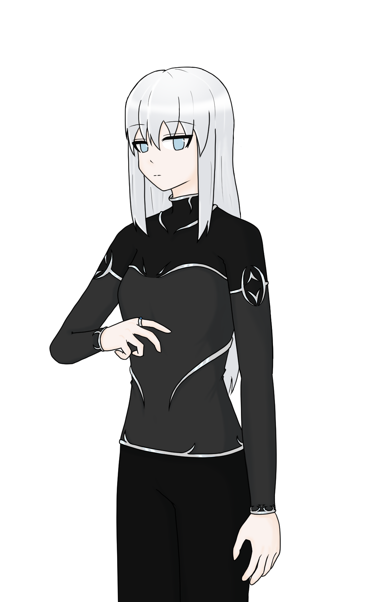
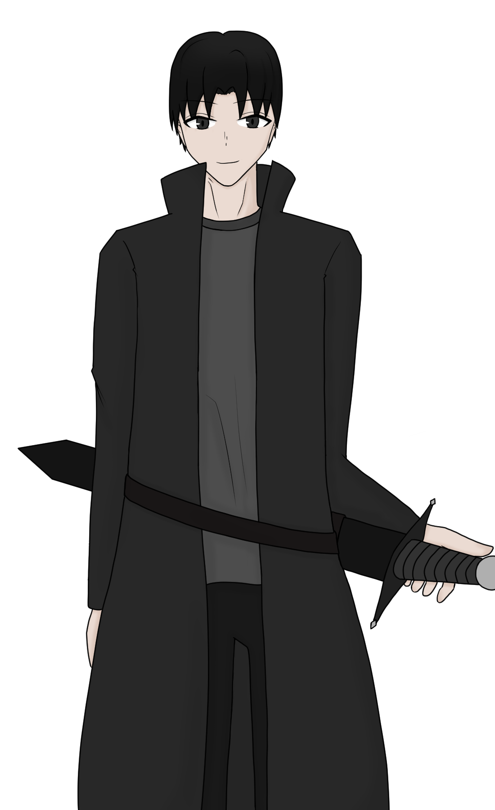

クライングシティ
都市観測重要対象 // 重要人物一覧アーカイブ
【警告】クライングシティは閉鎖されました。自由の剥奪、倫理の喪失、未知との遭遇に備えてください。
【企業通達】会社員としての義務を全うしてください。平和は存在しません。
【警告】クライングシティは閉鎖されました。自由の剥奪、倫理の喪失、未知との遭遇に備えてください。
【企業通達】会社員としての義務を全うしてください。平和は存在しません。
ナビゲーション
◆概要◆
◆お知らせ◆
◆キャラクター制作◆
◆会社◆
◆武器◆
◆追記・追加説明◆
◆登場人物一覧◆
キャラクターシート制作ページ ➔
【クレール】

Rains Factory Recovery部署の運転手 白銀の異名を持つ
【ルシェアード・ヴァルカン】

Rains Factory Recovery部署を率いる案内人 黒辻の異名を持つ、元黒塗の戦線リーダー